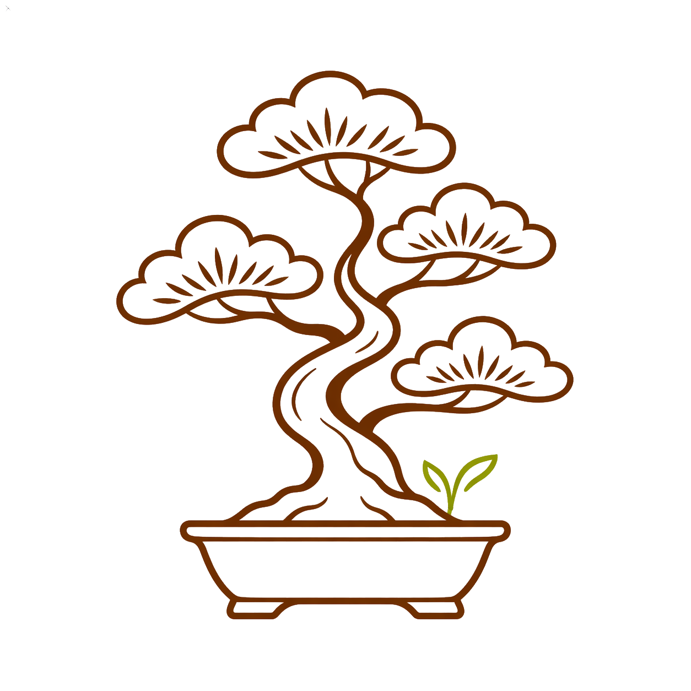
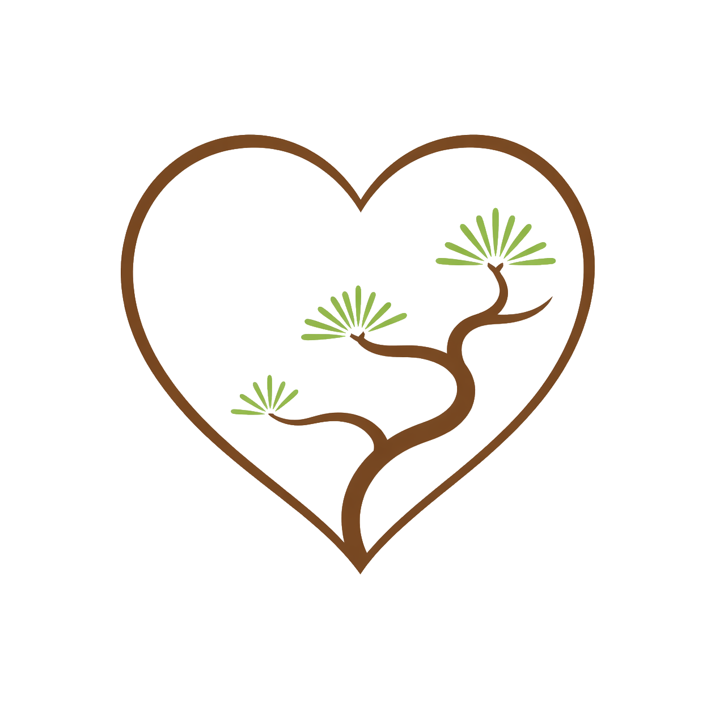
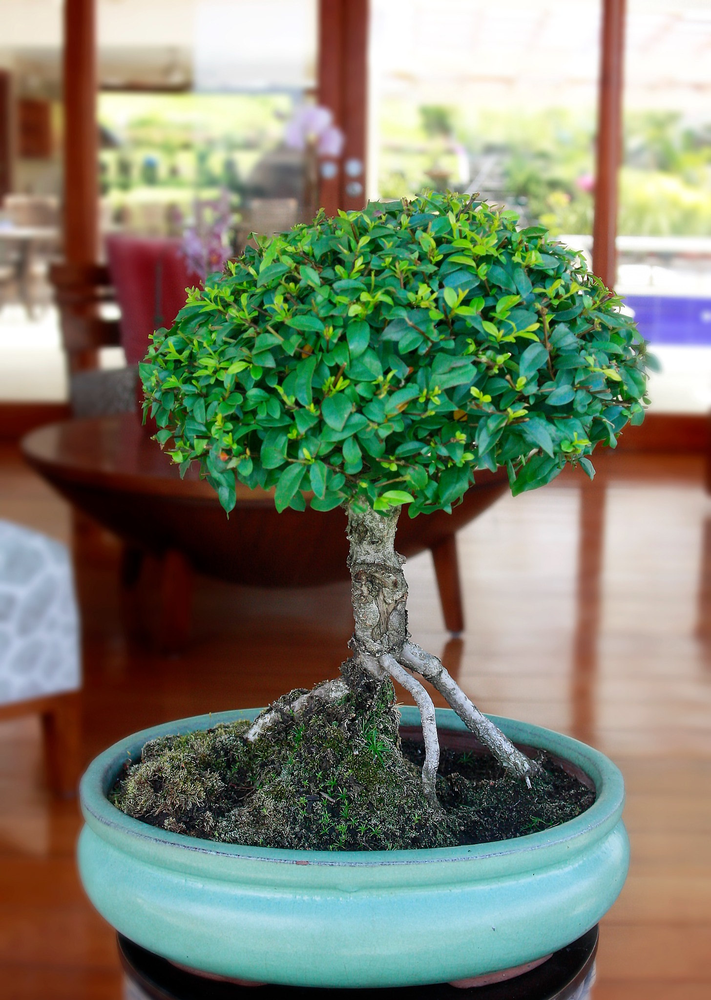
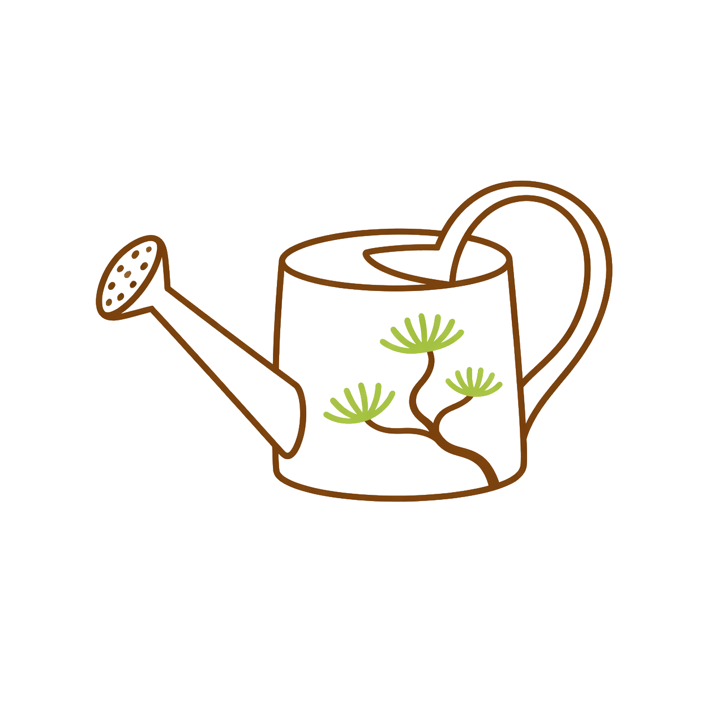

Chie Bonsai
Sabiduría en miniatura
Bonsáis naturales para decorar, regalar y conectar con la calma.

Artesanal
Decorativo
Pequeños árboles, grandes enseñanzas.
Conócenos
Un arte vivo para tu espacio
Chie Bonsai presenta ejemplares naturales con una estética tranquila, elegante y cercana a la naturaleza.
Ejemplares únicos
Cada bonsái tiene una forma y carácter diferente.
Cuidado artesanal
Una propuesta pensada para transmitir calma y dedicación.
Estilo natural
Colores tierra, verde y fondos claros para una imagen limpia.
Catálogo de bonsáis
Nuestros bonsáis
Una selección visual de bonsáis decorativos y naturales.
No hay bonsáis en esta categoría todavía.
Guía rápida
Cuidados básicos
Cuidados simples para mantener un bonsái sano y decorativo.
Ubicación
Buena luz natural y ventilación suave.

Riego
Riega cuando la tierra empiece a sentirse seca.
Poda
Recorta con cuidado para conservar su forma.
Paciencia
Observación constante y cuidado tranquilo.
Consulta disponibilidad
Encuentra tu bonsái ideal
Escríbenos directamente por WhatsApp o síguenos en redes sociales para ver más.
💬 Escribir por WhatsApp